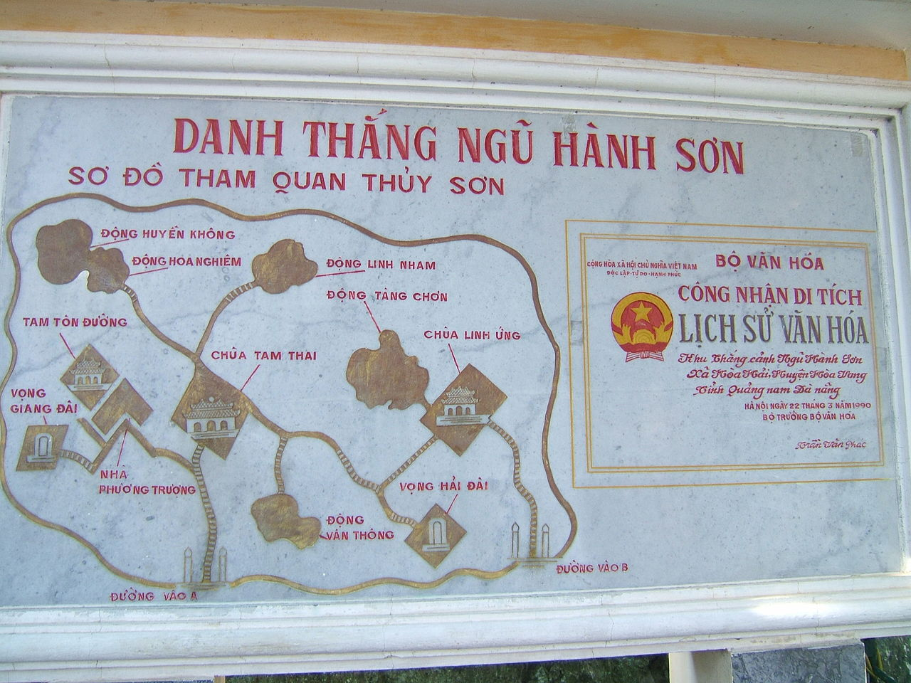
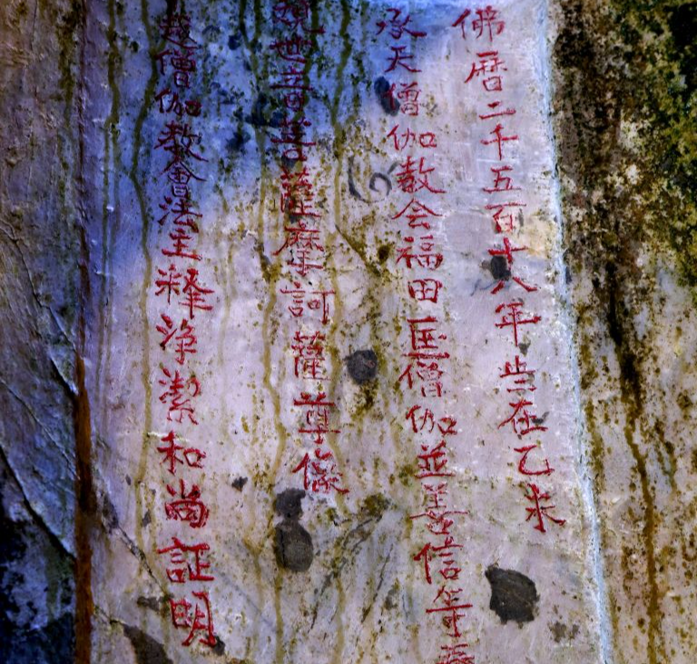
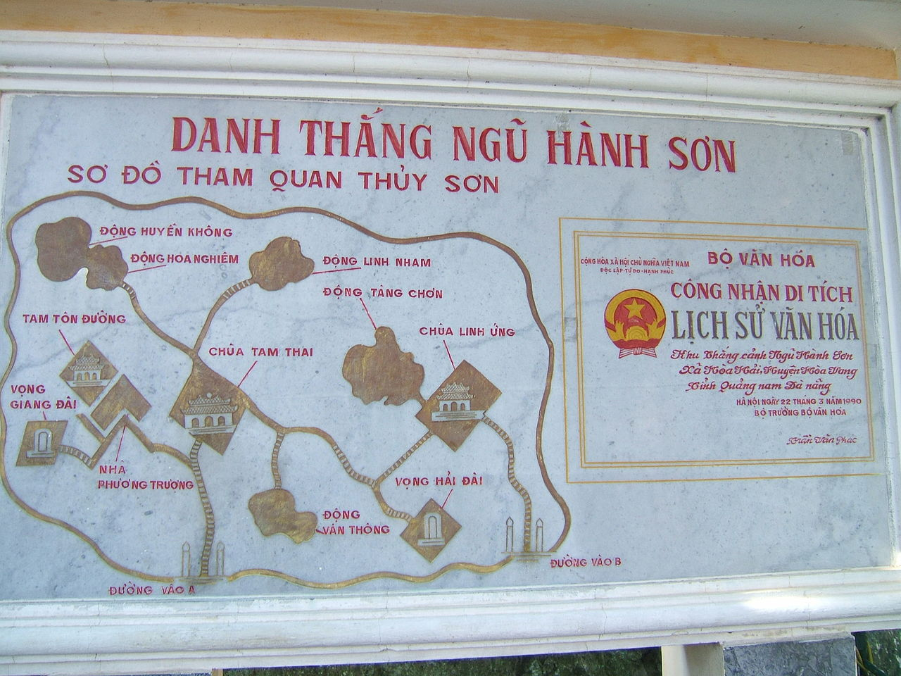
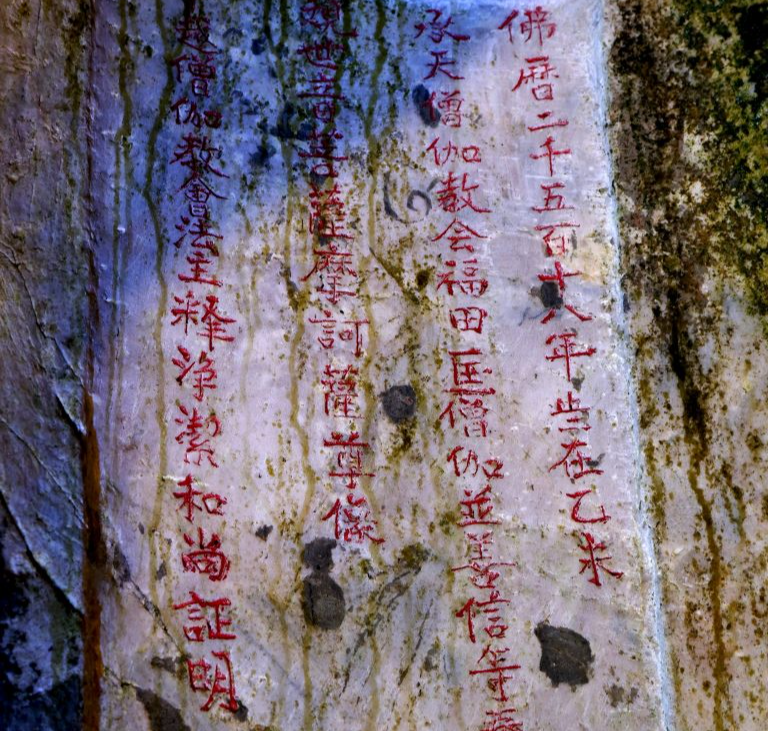

Ngũ Hành Sơn
Nơi gìn giữ những nét đẹp văn hoá
Chào mừng bạn đến với phường Ngũ Hành Sơn – vùng đất hội tụ vẻ đẹp thiên nhiên kỳ thú cùng những giá trị lịch sử – văn hoá đặc sắc. Du khách có thể khám phá núi đá vôi, chùa chiền linh thiêng, hang động cổ xưa và nhiều địa chỉ đỏ gắn liền với lịch sử dân tộc.
Khám Phá NgayGiới Thiệu Chung
Vùng Đất Ngũ Hành Sơn
Ngũ Hành Sơn, tọa lạc tại phường Ngũ Hành Sơn, bên bờ biển Đà Nẵng, là một tuyệt tác thiên nhiên bao gồm quần thể 5 ngọn núi đá vôi được đặt tên theo thuyết Ngũ Hành: Kim – Mộc – Thủy – Hỏa – Thổ.
Giá Trị Tự Nhiên
Quần thể núi đá, hang động, rừng cây và bãi biển tạo nên hệ sinh thái đa dạng, không khí trong lành.
Văn Hóa – Tâm Linh
Nơi lưu giữ các ngôi chùa, động từ thế kỷ XVII, là trung tâm Phật giáo linh thiêng của khu vực.
Giá Trị Lịch Sử
Là "Địa chỉ đỏ" quan trọng, gắn liền với các di tích và căn cứ kháng chiến trong thời kỳ chống Mỹ.
Du Khách Thường Ghé Thăm
Danh Lam Thắng Cảnh Nổi Bật
Núi Thủy Sơn
Ngọn núi lớn và đẹp nhất, nơi tập trung hầu hết các công trình kiến trúc Phật giáo và hang động huyền bí.
- Chùa Tam Thai cổ kính
- Chùa Linh Ứng (Ngũ Hành Sơn)
- Động Huyền Không kỳ vĩ
- Vọng Giang Đài – Vọng Hải Đài
Động Huyền Không
Một hang động lớn, mở ra giếng trời tự nhiên, tạo nên luồng ánh sáng độc đáo, là điểm check-in nổi tiếng.
- Giếng trời tự nhiên
- Bia ký triều Nguyễn
- Không gian linh thiêng
Động Âm Phủ
Mô phỏng 3 cảnh giới "Địa ngục – Trần gian – Thiên đường", động dài và sâu nhất, mang đậm dấu ấn văn hóa tâm linh.
- Mô phỏng Địa ngục – Thiên đường
- Hang động dài và sâu
- Giá trị giáo dục nhân quả
Chùa Tam Thai
Ngôi chùa cổ có từ thế kỷ XVII, là nơi du khách tìm đến sự tĩnh mịch và cầu an cho bản thân và gia đình.
- Kiến trúc cổ kính
- Điểm cầu an linh thiêng
- Không gian tĩnh mịch
Quần thể Ngũ Hành Sơn
Tổng quan trải nghiệm khám phá toàn bộ quần thể núi đá vôi Thủy Sơn, Kim, Mộc, Hỏa, Thổ.
- Thang máy Thủy Sơn tiện lợi
- Cổng trời hùng vĩ
- Đường mòn ngắm toàn cảnh Đà Nẵng
- Không khí trong lành, mát mẻ
Giá Trị Cội Nguồn
Khu Di Tích Lịch Sử – Địa Chỉ Đỏ
Di tích cách mạng K20
Là căn cứ quan trọng thời chống Mỹ. Nơi đây vẫn giữ nguyên trạng hầm bí mật và đường hầm, tái hiện cuộc sống và chiến đấu của quân dân ta.
- Căn cứ quan trọng thời chống Mỹ
- Hầm bí mật – đường hầm giữ nguyên trạng
Nhà truyền thống K20
Nơi trưng bày các hiện vật, tư liệu quý giá về cuộc kháng chiến anh dũng tại địa phương, cùng mô hình chiến trường xưa.
- Trưng bày hiện vật – tư liệu kháng chiến
- Mô hình chiến trường xưa
Hầm bí mật & Địa đạo
Các hầm trú ẩn và địa đạo đã được khôi phục nguyên bản, giúp du khách hiểu rõ hơn về cuộc sống và ý chí quật cường thời chiến.
- Hầm trú ẩn khôi phục nguyên bản
- Hiểu về cuộc sống thời chiến
Miếu và Đền thờ Liệt sĩ
Nơi tưởng niệm anh hùng, giáo dục truyền thống "Uống nước nhớ nguồn" cho thế hệ trẻ và du khách trong nước, quốc tế.
- Giáo dục truyền thống yêu nước
- Tưởng niệm anh hùng hy sinh
Góc Nhìn Nghệ Thuật
Thư Viện Hình Ảnh Tuyệt Đẹp
 



Kinh Nghiệm Du Lịch
Hướng Dẫn & Lịch Trình Tùy Chỉnh
Vé & Giờ Mở Cửa
- Vé tham quan Thủy Sơn: 40.000 VNĐ/người
- Vé Động Âm Phủ: 20.000 VNĐ/người
- Thang máy: 15.000 VNĐ/lượt
- Giờ mở cửa: 7:00 – 17:30 (Hàng ngày)
Gợi Ý Lịch Trình
- 2 giờ: Khám phá Núi Thủy Sơn (Chùa Linh Ứng, Động Huyền Không).
- 4 giờ: Thủy Sơn + Động Âm Phủ + Làng nghề đá.
- 6 giờ: Khám phá toàn diện (Thủy Sơn, Âm Phủ, Di tích K20, ăn trưa).
Lưu Ý Quan Trọng
- Quy định: Mặc trang phục lịch sự, kín đáo khi vào chùa, đền thờ.
- An toàn: Mang giày thể thao, đi lại cẩn thận khi leo núi và trong hang động.
- Bảo vệ: Giữ gìn vệ sinh chung, không chạm khắc lên đá.
Lên Kế Hoạch Tham Quan Tùy Chỉnh ✨
Sử dụng Trí tuệ Nhân tạo để tạo lịch trình tối ưu dựa trên thời gian và sở thích của bạn.